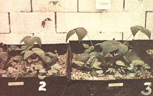

Below: Proof that organic hydroponics works. Beans onleft were raised in a water extract of rabbit manure,chicken manure, earthworm castings (manure), andwood ashes . . . while plants on right received Hyponexcommercial nutrient solution.